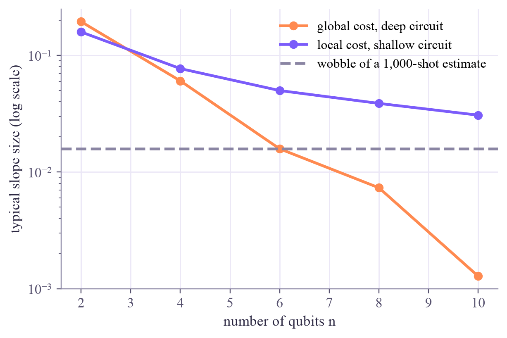
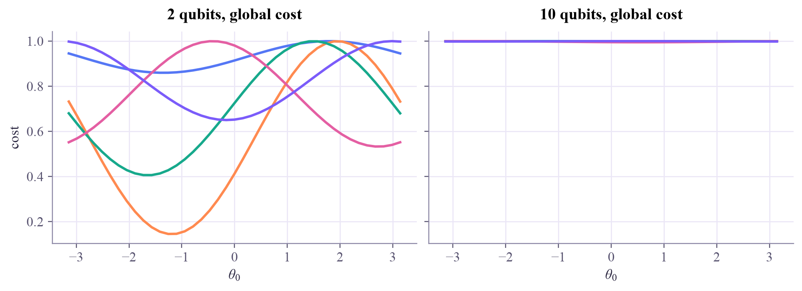

knobs for n = 10 qubits and 10 layers: 110
Quantum Computing
 about 13 min
about 13 min qc-w7d5.ipynb
qc-w7d5.ipynb
Barren plateaus, and the road to QML
Bigger circuits should be more powerful, but many of them come with landscapes that are flat almost everywhere. Measure the problem, meet what helps, and see where the road goes next.
In this lesson you will
- Describe a barren plateau: slopes that shrink exponentially with the number of qubits
- Measure slope sizes for random circuits, and compare global and local costs
- Name strategies that help, and see how this week leads into quantum machine learning
Warm-up
1 minLost on a frozen lake
Imagine hiking downhill in fog on a frozen lake: wherever you stand, the ground is flat to within a millimeter, though somewhere there's a deep hole. Your feet can't feel which way to go. Many large quantum circuits put their optimizers in exactly this spot. It's called a barren plateau, and it's one of the central problems of quantum machine learning.
Big idea
4 minFlat almost everywhere
Take a deep circuit of random rotations and entangling gates on qubits. Pick random knob settings and look at the slope along one knob. Its average is 0, and its typical size shrinks exponentially as qubits are added, roughly like for a global cost. The landscape isn't just hilly; it's flat almost everywhere, with the interesting valleys hidden in a tiny region.
Why that's fatal: every slope is estimated from shots, and shots wobble by up to about . When the true slope is smaller than the wobble, the optimizer can't tell uphill from downhill. To beat a slope of size you need about shots: exponentially many, as shrinks exponentially.
What makes it worse:
- Global costs, which compare all qubits at once, such as "probability that every qubit is 0".
- Deep, unstructured circuits that scramble the state completely.
- Noise, which on its own also flattens landscapes as circuits get deeper.
What helps: local costs (averages of one- or two-qubit measurements), shallow circuits, a start close to the identity, and ansatzes with structure that fits the problem (symmetries, physics). A recent and much-discussed twist: circuits that provably avoid barren plateaus can often be simulated efficiently on ordinary computers, so trainability and quantum advantage pull in opposite directions. That tension is a live research question.
Deep random circuits have exponentially small slopes, buried under shot noise: training needs local costs, shallow structured circuits and good starts, and that's where research is today.
Play
4 minWatch the landscape go flat
Left: the typical slope size against the number of qubits, with the shot-noise wobble as a dashed line. Right: five random slices of the cost along one knob.
Try this
With the global cost, step from 2 to 10 qubits and watch the slices flatten into a line. Find where the slope dips below the 1,000-shot wobble. Then switch to the local cost on a shallow circuit: the slices keep their shape, and the slopes stay visible. Change the shots to 100,000: how far does that push the blind spot?
Code
2 minBarren plateaus in Qiskit
The notebook for this lessonEvery code cell below, with what it printed, is in
qc-w7d5.ipynb. To change the code and run it yourself, open the notebook in Google Colab (free, in your browser) or download it for your own Jupyter.import numpy as np
import matplotlib.pyplot as plt
from qiskit import QuantumCircuit
from qiskit.quantum_info import Statevector
def circuit(theta, n, layers):
"""Layers of RY on every qubit and a chain of CZ gates, then a final RY layer."""
qc = QuantumCircuit(n)
k = 0
for _ in range(layers):
for q in range(n):
qc.ry(theta[k], q)
k += 1
for q in range(n - 1):
qc.cz(q, q + 1)
for q in range(n):
qc.ry(theta[k], q)
k += 1
return qc
def costs(theta, n, layers):
"""Global cost: 1 - P(all qubits 0). Local cost: 1 - the average over qubits of P(that qubit is 0)."""
p = Statevector(circuit(theta, n, layers)).probabilities()
index = np.arange(2 ** n)
global_cost = 1 - p[0]
local_cost = 1 - np.mean([p[((index >> q) & 1) == 0].sum() for q in range(n)])
return global_cost, local_cost
def slope_spread(n, layers, which, samples=200, seed=0):
"""Standard deviation of dC/d(theta_0) over random knob settings, by the parameter-shift rule."""
rng = np.random.default_rng(seed)
P = n * (layers + 1)
slopes = []
for _ in range(samples):
theta = rng.uniform(0, 2 * np.pi, P)
shift = np.zeros(P)
shift[0] = np.pi / 2
slopes.append((costs(theta + shift, n, layers)[which] - costs(theta - shift, n, layers)[which]) / 2)
return np.std(slopes)
print("knobs for n = 10 qubits and 10 layers:", 10 * 11)What it printed in the notebook
ns = [2, 4, 6, 8, 10]
global_deep = [slope_spread(n, n, 0) for n in ns]
local_shallow = [slope_spread(n, 2, 1) for n in ns]
for n, g, l in zip(ns, global_deep, local_shallow):
print(f"n = {n:2d}: global, deep {g:.5f} local, shallow {l:.5f}")
plt.semilogy(ns, global_deep, "o-", color="#ff8a50", label="global cost, deep circuit")
plt.semilogy(ns, local_shallow, "o-", color="#7b5cfa", label="local cost, shallow circuit")
plt.axhline(1 / (2 * np.sqrt(1000)), color="#8a85a3", ls="--", label="wobble of a 1,000-shot estimate")
plt.xlabel("number of qubits n")
plt.ylabel("typical slope size (log scale)")
plt.legend()
plt.show()What it printed in the notebook
n = 2: global, deep 0.19458 local, shallow 0.15881 n = 4: global, deep 0.06047 local, shallow 0.07703 n = 6: global, deep 0.01582 local, shallow 0.04995 n = 8: global, deep 0.00733 local, shallow 0.03876 n = 10: global, deep 0.00128 local, shallow 0.03073

xs = np.linspace(-np.pi, np.pi, 41)
fig, axes = plt.subplots(1, 2, figsize=(9, 3.2), sharey=True, layout="constrained")
for ax, n in zip(axes, [2, 10]):
rng = np.random.default_rng(1)
for _ in range(5):
theta = rng.uniform(0, 2 * np.pi, n * (n + 1))
values = []
for x in xs:
theta[0] = x
values.append(costs(theta, n, n)[0])
ax.plot(xs, values, lw=2)
ax.set_title(f"{n} qubits, global cost")
ax.set_xlabel(r"$\theta_0$")
axes[0].set_ylabel("cost")
plt.show()What it printed in the notebook

Your turn
2 minYour turn: start close to the identity
Start the deep 8-qubit circuit with all knobs small instead of random. How much bigger are the slopes of the global cost?
def slope_spread_small_start(n, layers, which, samples=200, seed=0, scale=0.1):
rng = np.random.default_rng(seed)
P = n * (layers + 1)
slopes = []
for _ in range(samples):
theta = rng.uniform(0, 2 * np.pi, P) # TODO: small angles instead: scale * rng.standard_normal(P)
shift = np.zeros(P)
shift[0] = np.pi / 2
slopes.append((costs(theta + shift, n, layers)[which] - costs(theta - shift, n, layers)[which]) / 2)
return np.std(slopes)
print("random start:", slope_spread(8, 8, 0), " small start:", slope_spread_small_start(8, 8, 0))Need a hint?
Replace the random draw by theta = scale * rng.standard_normal(P): angles around 0, so the circuit starts out doing almost nothing.
Show a solution
def slope_spread_small_start(n, layers, which, samples=200, seed=0, scale=0.1):
rng = np.random.default_rng(seed)
P = n * (layers + 1)
slopes = []
for _ in range(samples):
theta = scale * rng.standard_normal(P) # close to the identity circuit
shift = np.zeros(P)
shift[0] = np.pi / 2
slopes.append((costs(theta + shift, n, layers)[which] - costs(theta - shift, n, layers)[which]) / 2)
return np.std(slopes)
print(f"random start: slope spread {slope_spread(8, 8, 0):.5f}")
print(f"small start: slope spread {slope_spread_small_start(8, 8, 0):.5f}")
print("Near the identity the circuit isn't scrambled yet, so the landscape still has slopes to follow.")
print("It helps training get going; it doesn't make every problem easy.")What it printed in the notebook
random start: slope spread 0.00733 small start: slope spread 0.11977 Near the identity the circuit isn't scrambled yet, so the landscape still has slopes to follow. It helps training get going; it doesn't make every problem easy.
The road to quantum machine learning
You now have both halves: machine learning (models, losses, gradients, honest testing) and quantum computing (states, gates, measurement, noise, trainable circuits). The Quantum ML tutorial puts them together:
- Data meets qubits: encoding data into states, feature maps, and how similar two states are.
- Quantum kernels: this term's kernel trick, with similarities computed by circuits.
- Variational classifiers: this week's trainable circuits, trained on data with PyTorch.
- QML for research: noise, barren plateaus, fair classical baselines, and how to read a QML paper.
Check yourself
1 minQuick check
Question 1 of 3
What is a barren plateau?
Question 2 of 3
A typical slope is 0.001. Roughly how many shots per estimate to see it above the shot noise?
Question 3 of 3
Which choice helps against barren plateaus?
Wrap-up
1 minThis week in one sentence
Quantum link
Barren plateaus are the main reason why "just make the quantum neural network bigger" doesn't work, and why the Quantum ML tutorial insists on classical baselines and on reading claims carefully. You now know enough to follow that debate.
Go deeper (optional)
McClean and coauthors, "Barren plateaus in quantum neural network training landscapes" (Nature Communications, 2018); Cerezo and coauthors, "Cost function dependent barren plateaus in shallow parametrized quantum circuits" (Nature Communications, 2021); and the review by Larocca and coauthors, "Barren plateaus in variational quantum computing" (Nature Reviews Physics, 2025).
That's the whole Quantum Computing tutorial! Saturday: the graduation flashback. Once both tutorials are done, the Quantum ML tutorial is waiting.

That's the lesson!
Tap the button to save it. Short and steady wins.
Marked by mistake? Undo